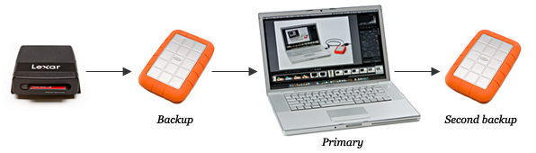

1. Primary (Working) Drive
- Lacie Rugged (Macbook Air)
- Internal Drive (Future Macbook Pro)
- RAID (Main Storage - RAID10?)

Tips from: https://photographylife.com/photography-backup-workflow
Here are my recommendations on setting up a workflow process:
So here is the quick summary:
If you follow this process, you will have your images stored in three places: your computer, an external drive connected to your computer and another external drive that is sitting in an offsite location.
RAID is not a form of Backup!
Whether you run RAID 1 (mirroring), RAID 5 (striping) or any other type of redundant RAID, never make an assumption that your data is backed up and you do not need to back it up elsewhere. RAID does not replace backup. When RAID volumes need to be rebuilt, especially if it is a RAID 5 volume, there is always a chance that another drive might fail during the rebuild process. In fact, most people buy drives for a RAID volume in the same time-frame, which increases the chance of more than one drive dying at the same time. RAID is great to keep your storage running and keep you working, but you should always have at least two more backups, as explained above.
What about external storage? Remember, for a 3-2-1 backup1, you will need at least two more backups on different media, with one being an off-site backup. Which means that aside from your working machine, you will need a primary backup device and a secondary backup device that will be taken off-site. I recommend that you size your primary backup device with a good potential for future growth.
Whatever backup options you choose, remember to follow the 3-2-1 rule of backups:
3 - Keep 3 copies of any important file: 1 primary and 2 backups.
2 - Keep the files on 2 different media types to protect against different types of hazards.
1 - Store 1 copy offsite (e.g., outside your home or business facility).
More on 3-2-1 and on pros and cons
To recap, here is my recommended backup process for serious amateurs, semi-pros and pros:
4 bay array: NAS Western Digital My Cloud EX4100 (from R$ 3770 - 4250) https://www.boadica.com.br/produtos/p148055/western-digital-wdbwze0000nbk-nesn
4 bay array: Seagate / STDE100 (from R$ 4414 - 4422) https://www.boadica.com.br/produtos/p130784/seagate-stde100
6 bay array: Seagate / STDF100 6-Bay NAS Pro Server Enclosure (from R$ 6417 - 6424 / USD 700-discontinued) https://www.boadica.com.br/produtos/p133124/seagate-stdf100 from BH Photo - unavailable 6xSATA-II 150Watt 3kg (2xEthernet1000 / 1xUSB2 / 2xUSB3) (17.0 x 23.6 x 21.8cm)
Synology DiskStation DS1817+ 8-Bay NAS Enclosure (USD 950) - Review - WD 4TB Network OEM HDD Retail Kit (8-Pack, WD40EFRX, Red Drives) (USD 970)
Photos:
Videos:
## -- Data Management
## |__Docs
## |__Documentation
## |__Contracts
## |__IDs
## |__Financial Statements and Receipts
## |__YYYY
## |__IRPF
## |__YYYY
## |__Logs
## |__2018.04.20_Blog_sequencenumber
## |__2018.04.20_Vlog_sequencenumber
## |__YYYY.MM.DD_LogFormat_sequencenumber
## |__Projects
## |__Coding
## |__ProjectName
## |__data
## |__image
## |__old_deprecated
## |__template
## |__video
## |__Travel Plans
## |__YYYY.MM.DD_LogFormat_sequencenumber
## |__YCY Media
## |__YYYY.MM.Location
## |__Images
## |__1.Original
## |__2.Master
## |__3.Layered_Master
## |__3.Projects (HDR - Panorama - Timelapses) (Optional)
## |__4.Web
## |__5.Print (Optional)
## |__Videos
## -- Media Volume XX
## |__YYYY
## |__YYYY.MM.Location:Event
## |__YYYYMMDD
## |__Drone
## |__Photos
## |__1. Originals
## |__2. Edits
## |__Videos
## |__1. Originals
## |__2. Edits
## |__DSLR
## |__Photos
## |__1. Originals (jpg)
## |__1. Originals (RAW)
## |__2. Masters
## |__3. Layered Masters
## |__3.1. Project_Name (Panorama : HDR : TimeLapse)
## |__4. Publishing : Final Edits
## |__Instagram
## |__Print
## |__Web
## |__Videos
## |__1. Originals
## |__2. Edits
## |__GoPro
## |__Photos
## |__1. Originals
## |__2. Edits
## |__Videos
## |__1. Originals
## |__2. Edits
## |__Iphone
## |__Photos
## |__1. Originals
## |__2. Edits
## |__Videos
## |__1. Originals
## |__2. Edits
## |__YYYY.MM.Project_Name (Photo)
## |__2. Master
## |__3. Layered Master : ProjectName
## |__4. Final Edits
## |__YYYY.MM.Project_Name (Video)
## |__1. Selected Originals
## |__2. Final Edits[Author]_YYYYMMDD_[Source/Camera]_[Event]_[SequenceNumber].[file_extension][Author]_YYYYMMDD_[Source/Camera]_[Event]_[SequenceNumber]_M.[file_extension][Author]_YYYYMMDD_[Source/Camera]_[Event]_[SequenceNumber]_LM.[file_extension][Author]_YYYYMMDD_[Source/Camera]_[Event]_[SequenceNumber]_LM_[edit_type].[file_extension]Where:
Sequence Number: should be cronological sequential numbering of the files by event
Final Edits are the data after all the steps and with appropriate size and resolution for its specific applications (LM_web.jpg / LM_instagram.jpg / LM_print.jpg)
What is a Photography Workflow?
How to Organize Photos in Lightroom
Post-import check Now that you know how to import your images with custom templates, go ahead and import all of your pictures into Lightroom and make sure that everything gets transitioned correctly. Do not forget to change the folder names along with “Custom Text” and “Keywords” fields upon each new import in the “Import Photos” screen going forward. Otherwise, you will end up with a bunch of unwanted folders and incorrect file names and keywords. If you accidentally imported your pictures with wrong settings, it is not a problem. Just select the imported pictures, then change the keywords under “Keywording” section in the “Library” module, then rename the folder to the correct event name and press “F2” or go to Library -> Rename Photos to mass rename your pictures. If your pictures go out of sequence for whatever reason (for example your sequence numbers are repeated, but with a different name), then simply select all pictures and batch-rename them all by pressing “F2” on your keyboard. Give it a new sequence number and it will start renaming them based on the age of the image or your selection criteria.
Perform full backup By now, you have done a lot of work to re-organize your photographs and you have completed importing all of your pictures into Lightroom. It is definitely a good time to perform a full backup of both your Lightroom catalog and your pictures. Many people assume that the backup functionality in Lightroom backs up their photographs too. That’s a very wrong assumption! Lightroom does NOT backup your photos - it only backs up your Lightroom catalog, which is useless without your images. You can afford losing a Lightroom database, but you cannot afford losing your pictures. Therefore, you should always backup your photographs first, then worry about Lightroom.
Here is how to perform a full backup:
"E:\Photos". Select this folder and drag and drop it into the backup drive’s “Photos Backup” folder or something similar, which should start the copy process.The above process could be easily automated by third party backup programs or with some built-in backup tools within your operating system. I highly recommend to set up an automated job that backs up your computer as often as possible. I also recommend backing up your data to at least two different locations every time, as explained in our “Basic Backup Tips for Beginners” article.
How to Photograph the Milky Way
DJI MAvic Air Review - with photos, lots of them - MavicAir - BoaDica (R$ 4499 - 4599)
Platypod Pro Max Review - USD 99
Standard RAID Levels: RAID 6 does not have a performance penalty for read operations, but it does have a performance penalty on write operations because of the overhead associated with parity calculations. Performance varies greatly depending on how RAID 6 is implemented in the manufacturer’s storage architecture-in software, firmware, or by using firmware and specialized ASICs for intensive parity calculations. RAID 6 can read up to the same speed as RAID 5 with the same number of physical drives.
Nested RAID Levels: RAID 10 is the preferable RAID level for I/O-intensive applications such as database, email, and web servers, as well as for any other use requiring high disk performance.
All computer users, from home users to professional information security officers, should back up the critical data they have on their desktops, laptops, servers, and even mobile devices to protect it from loss or corruption. Saving just one backup file may not be enough to safeguard your information. To increase your chances of recovering lost or corrupted data, follow the 3-2-1 rule: 3 - Keep 3 copies of any important file: 1 primary and 2 backups. 2 - Keep the files on 2 different media types to protect against different types of hazards. 1 - Store 1 copy offsite (e.g., outside your home or business facility). This paper summarizes the pros, cons, and security considerations of backup options for critical personal and business data.↩